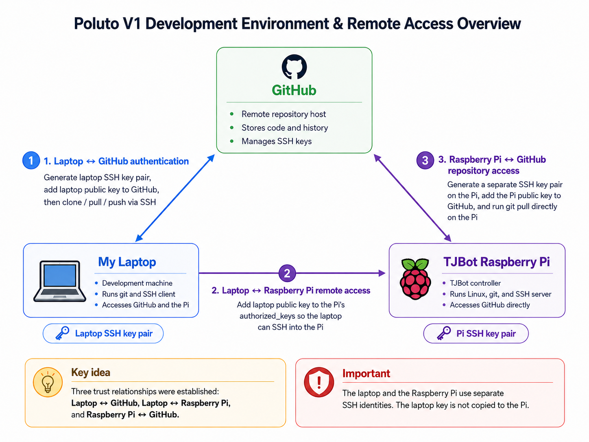
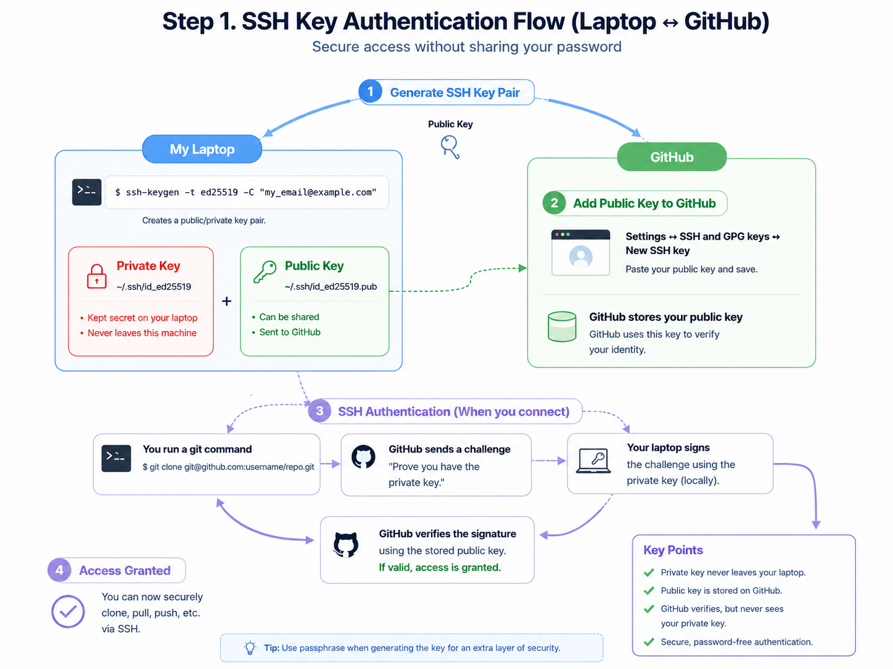
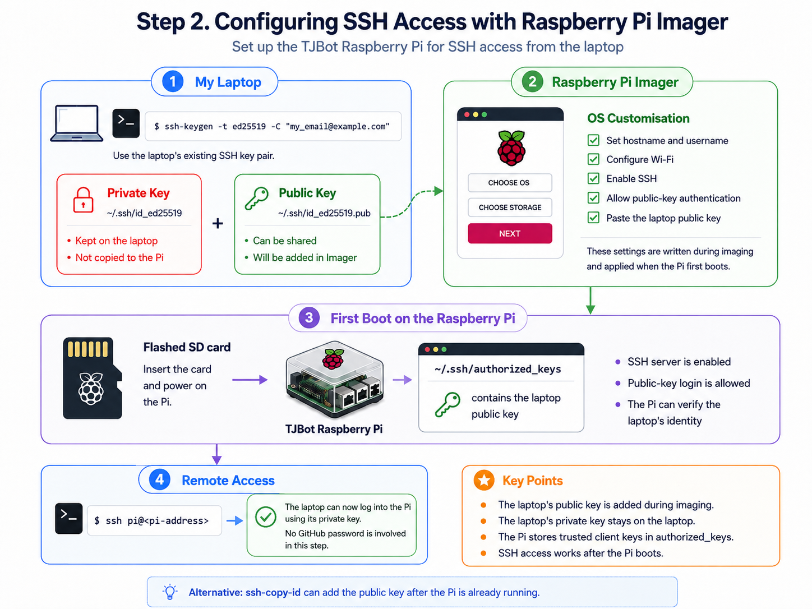
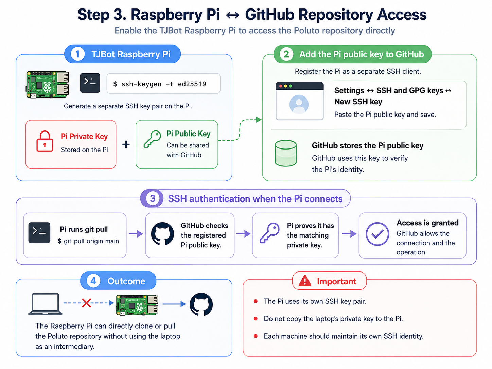

Before I could comfortably develop for Poluto V1, I needed a way for my laptop, GitHub, and the Raspberry Pi inside the robot to recognise one another. This setup took a meaningful part of the project: not because the commands were long, but because each machine needed a distinct role and identity.

Initially, I treated SSH as a single task. It became clearer when I separated the work into these three connections: laptop to GitHub, laptop to Raspberry Pi, and Raspberry Pi to GitHub.
Step 1
Laptop ↔ GitHub
I first generated an SSH key pair on my laptop and registered its public key with GitHub. The private key remains on the laptop. When GitHub asks the machine to prove its identity, the laptop signs that request locally without sending the private key anywhere.

ssh-keygen -t ed25519 -C "<your-email>"
cat ~/.ssh/id_ed25519.pub
ssh -T git@github.comResult: my laptop could clone, pull, and push the Poluto repository through SSH.
Step 2
Laptop → Raspberry Pi
The next question was more specific: where does the public key go when the target is the robot computer? While preparing the SD card in Raspberry Pi Imager, I enabled SSH, selected public-key authentication, and added my laptop’s public key. On first boot, the Pi stored that key in ~/.ssh/authorized_keys: its list of identities allowed to log in.

ssh <username>@<pi-address>Result: my laptop could remotely access and control Poluto’s Raspberry Pi without entering a password each time.
Step 3
Raspberry Pi ↔ GitHub
Finally, the Pi itself needed direct repository access so it could clone or pull code independently. I generated a new key pair on the Pi and registered its public key with GitHub as a separate SSH identity.

Result: the Pi could clone or pull the Poluto repository directly, without using the laptop as an intermediary.
This was not only an installation record. It was the moment I began to understand the project as a distributed development environment: three separate systems, each with a purpose, permissions, and a way to authenticate.
This is an early process note. I will return to it with the exact project timeline and setup details from Poluto V1.